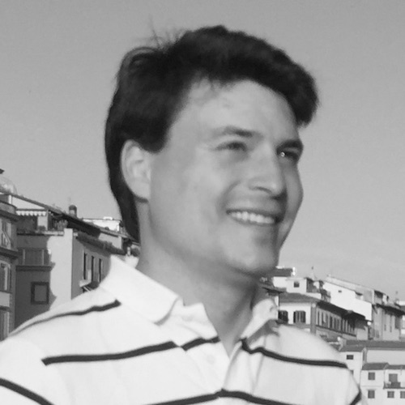
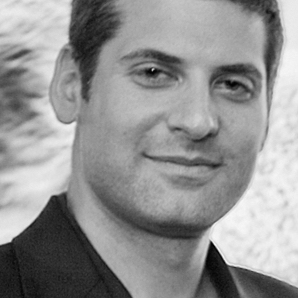
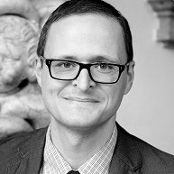
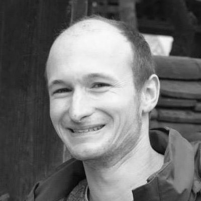
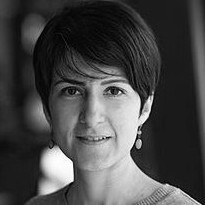

- May 13, 2016: Schedule for Wiki Workshop @ ICWSM announed.
- May 13, 2016: Papers of Wiki Workshop @ ICWSM now available as PDFs.
- May 1, 2016: Tentative schedule for Wiki Workshop @ ICWSM announed.
- Apr. 27, 2016: First speakers announed for Wiki Workshop @ ICWSM. Stay tuned for more!
- Apr. 27, 2016: Wiki Workshop @ WWW was a big success! Great participants, great invited speakers, great surprise guest (Jimmy Wales!). Hope to see many of you in Cologne on May 17!
- Apr. 11, 2016: Papers of Wiki Workshop @ WWW now available as PDFs.
- Apr. 5, 2016: Schedule for Wiki Workshop @ WWW announced.
- Apr. 1, 2016: Titles and abstracts of WWW keynotes announced.
- Mar. 17, 2016: Exciting invited speakers announced for Wiki Workshop @ WWW! (Titles and abstracts of talks to follow soon.)
- Mar. 17, 2016: Accepted papers announced.
- Feb. 23, 2016: First submission deadline for Wiki Workshop @ ICWSM extended to Wednesday, March 3, 2016. (The second deadline remains unchanged: March 11, 2016).
- Jan. 22, 2016: The date for the WWW workshop has been set: Tuesday, April 12, 2016.
- Jan. 20, 2016: Follow us on Twitter for up-to-date news! Please use the #WikiWorkshop2016 hashtag for referring to the workshop in your tweets.
- Jan. 19, 2016: EasyChair submission sites now open; cf. "Submission instructions".
- Dec. 30, 2015: Wiki Workshop 2016 webpage online.
The workshop takes place in Conference Room Ost at GESIS, Unter Sachsenhausen 6, 50667 Köln.
See here for a map showing how to walk from the registration desk at Maternushaus to the workshop venue.
| 9:00 - 9:15 | Welcome |
| 9:15 - 9:45 | "How much does a polar bear weigh?" |
| 9:45 - 10:30 | Invited talk: Martin Potthast: Wikipedia Text Mining — Uncovering Quality and Reuse |
| 10:30 - 11:00 | Coffee break |
| 11:00 - 11:45 | Invited talk: Claudia Wagner: Gender Inequalities in Wikipedia |
| 11:45 - 12:15 | Poster spotlight presentations |
| 12:15 - 12:30 | Poster setup |
| 12:30 - 14:00 | Lunch and poster session |
| 14:00 - 14:45 | Invited talk: Ofer Arazy: Emergent Work in Wikipedia |
| 14:45 - 15:30 | Invited talk: Jürgen Pfeffer: Applying Social Network Analysis Metrics to Large-Scale Hyperlinked Data |
| 15:30 - 16:00 | Coffee break |
| 16:00 - 16:45 | Invited talk: Fabian Suchanek: A Hitchhiker's Guide to Ontology |
| 16:45 - 17:00 | Open discussion and closing remarks |

Wikipedia Text Mining — Uncovering Quality and Reuse
Wikipedia's articles are generally of high quality, yet, only a small fraction rank among "featured articles", i.e., articles that are considered to be of the best that Wikipedia has to offer. To coordinate the improvement of less-than-perfect articles, editors may insert template messages into those where flaws have been found to let others know how they can help to improve the articles in question. Mining these template messages gives insights into how Wikipedia articles improve over time. The template messages may also serve as ground truth for prediction technology to identify quality flaws in articles that have not been manually reviewed so far. In the first part of this talk, our corresponding research will be reviewed. The second part, concerns Wikipedia text reuse: it is well-known that Wikipedia's articles are reused and plagiarized all across the web, however, chunks of Wikipedia articles are also reused within Wikipedia. As a first step to retrieve reused text within and without Wikipedia, the Picapica search engine (
www.picapica.org) is demonstrated where documents can be uploaded to identify text passages that have been reused from Wikipedia. Finally, we will show first results of a pairwise comparison of all Wikipedia articles against each other as well as a graph-based visualization built on top of the article similarity matrix.
Martin is a postdoctoral researcher at the Digital Bauhaus Lab at Bauhaus-Universität Weimar, Germany. His research interests include information retrieval, machine learning, and web technology.
Martin obtained a Diplom in computer science at the University of Paderborn and joined the working group Web Technology and Information Systems at the Bauhaus-Universität Weimar in 2006, where he graduated as Dr. rer. nat. in 2011.
Gender Inequalities in Wikipedia
Contributing to the writing of history has never been as easy as it is today thanks to Wikipedia, a community-created encyclopedia that aims to document the world’s knowledge from a neutral point of view. Though everyone can participate it is well known that the editor community has a narrow diversity, with a majority of white male editors. While this participatory gender gap has been studied extensively in the literature, this talk sets out to assess potential gender inequalities in Wikipedia articles along different dimensions: notability, topical focus, linguistic bias, structural properties, and meta-data presentation.
We find that (i) women in Wikipedia are more notable than men, which we interpret as the outcome of a subtle glass ceiling effect; (ii) family-, gender-, and relationship-related topics are more present in biographies about women; (iii) linguistic bias manifests in Wikipedia since abstract terms tend to be used to describe positive aspects in the biographies of men and negative aspects in the biographies of women; and (iv) there are structural differences in terms of meta-data and hyperlinks, which have consequences for information-seeking activities. While some differences are expected, due to historical and social contexts, other differences are attributable to Wikipedia editors. The implications of such differences are discussed having Wikipedia contribution policies in mind. We hope that the present work will contribute to increased awareness about, first, gender issues in the content of Wikipedia, and second, the different levels on which gender biases can manifest on the Web.
Claudia is a postdoctoral researcher at the Computational Social Science Department at GESIS – Leibniz Institute for the Social Sciences and an Adjunct Lecturer at the University of Koblenz–Landau. Her research investigates computational methods for analyzing and modeling social phenomena (such as culture, eating habits, collective interest, discrimination or hate) from digital trace data. She received her Master's and Ph.D. degrees in Computer Science from Graz University of Technology and worked as a research assistant at Joanneum Research in Graz, Austria.
Emergent Work in Wikipedia
Online production communities present an exciting opportunity for investigating novel organizational forms. Extant theoretical accounts of knowledge co-production point to organizational policies, norms, and communication as key mechanisms enabling the coordination of work. Yet, in practice participants in initiatives such as Wikipedia are often occasional contributors who are unaware of community policies and do not communicate with other members. How then is work coordinated and how does the organization maintain stability in the face of dynamics in individuals’ task enactment? In this study we develop a conceptualization of emergent roles - the prototypical activity patterns that organically emerge from individuals’ spontaneous actions – and investigate the temporal dynamics of emergent role behaviors. Conducing a multi-level large-scale empirical study stretching over a decade, we tracked co-production of a thousand Wikipedia articles, logging two hundred thousand distinct participants and seven hundred thousand co-production activities, and recording each activity’s type. We identified seven prototypical emergent roles, and found that participants’ behavior is turbulent, with substantial flow in and out of co-production work and across roles. Our findings at the organizational level, however, show that work is organized around a highly stable set of emergent roles, despite the absence of traditional stabilizing mechanisms such as pre-defined work procedures or role expectations. We conceptualize this dualism in emergent work as “Turbulent Stability”. Further analyses suggest that co-production is artifact-centric, where contributors mutually adjust according to the artifact’s changing needs. Our study advances the theoretical understandings of self-organizing knowledge co-production and particularly the nature of emergent roles. We also highlight the implications for custodians of online communities, as well as for managers of firms engaging in self-organized knowledge collaboration.
Ofer is a faculty member of the Information Systems group at the University of Haifa. Previously, he was an Associate Professor at the University of Alberta (2004-2013). Ofer received his Ph.D. in Management Information Systems at the University of British Columbia (UBC) in 2004. His main research interests—broadly speaking—are in the areas of knowledge management and human–computer interaction (HCI).
Applying Social Network Analysis Metrics to Large-Scale Hyperlinked Data
Most of the widely used network analytical methods (e.g. centrality indices) were developed 30+ years ago based on observations of and theories related to small groups (<25 people). If we now use these methods for analyzing large-scale hyperlinked data, we face a number of challenges. Scaling of algorithms is the most obvious one, as the algorithmic complexity of many algorithms makes it almost impossible to apply them to networks with millions of nodes. Furthermore, theoretical and methodological questions arise. Do algorithmic assumption and interpretation fit form and size of data? Do underlying small group theories scale to big data. Which traditional research questions still make sense?
Jürgen is an Associate (with Tenure) Professor of Computational Social Science & Big Data at Technical University of Munich / Bavarian School of Public Policy. Jürgen earned a Ph.D. in Business Informatics from Vienna University of Technology. He was working in industry and non-university research institutes for ten years before he joined the School of Computer Science at Carnegie Mellon University in Pittsburgh (USA) where he held the position of an Assistant Research Professor 2012-2015. Jürgen's research focus lies in the computational analysis of organizations and societies with a special emphasis on large-scale systems. He is particularly interested in methodological and algorithmic questions as well as challenges arising from analyzing such systems.

A Hitchhiker's Guide to Ontology
In this talk, I will give an overview of our recent work in the area of knowledge bases. I will first talk about our main project, the YAGO knowledge base. YAGO is now multilingual, and has grown into a larger project at the Max Planck Institute for Informatics and Télécom ParisTech. I will then talk about the alignment of knowledge bases. This includes the alignment of classes, instances, and relations across knowledge bases. The third area is rule mining. We can find semantic correlations in the form of Horn rules in the knowledge base. I will also talk about watermarking approaches to trace the provenance of ontological data. Finally, I will show applications of the knowledge base for mining news corpora.
Fabian is an Associate Professor at the Telecom ParisTech University in Paris. He obtained his Ph.D. at the Max Planck Institute for Informatics under the supervision of Gerhard Weikum. In his thesis, Fabian developed, inter alia, the YAGO ontology, one of the largest public ontologies, which earned him a honorable mention of the SIGMOD dissertation award. Fabian was a postdoc at Microsoft Research in Silicon Valley and at INRIA Saclay in France. He continued as the leader of the Otto Hahn Research Group "Ontologies" at the Max Planck Institute for Informatics in Germany. Fabian taught classes on the Semantic Web, Information Extraction and Knowledge Representation in France, in Germany, and in Senegal. With his students, he works on information extraction, rule mining, ontology matching, and other topics related to large knowledge bases.
Yashaswi Pochampally, Kamalakar Karlapalem and Navya Yarrabelly
Semi-Supervised Automatic Generation of Wikipedia Articles for Named Entities
(paper 1)
[PDF]
Joan Guisado-Gámez, Josep Lluís Larriba-Pey, David Tamayo and Jordi Urmeneta
ENRICH: A Query Expansion Service Powered by Wikipedia Graph Structure
(paper 3)
[PDF]
Ioannis Protonotarios, Vasiliki Sarimpei and Jahna Otterbacher
Similar Gaps, Different Origins? Women Readers and Editors at Greek Wikipedia
(paper 5)
[PDF]
Sven Heimbuch and Daniel Bodemer
Wiki Editors' Acceptance of Additional Guidance on Talk Pages
(paper 6)
[PDF]
Yerali Gandica, Renaud Lambiotte and Timoteo Carletti
What Can Wikipedia Tell Us about the Global or Local Character of Burstiness?
(paper 7)
[PDF]
Andreas Spitz, Vaibhav Dixit, Ludwig Richter, Michael Gertz and Johanna Geiß
State of the Union: A Data Consumer's Perspective on Wikidata and Its Properties for the Classification and Resolution of Entities
(paper 8)
[PDF]
Finn Årup Nielsen
Literature, Geolocation and Wikidata
(paper 9)
[PDF]
Ana Freire, Matteo Manca, Diego Saez-Trumper, David Laniado, Ilaria Bordino, Francesco Gullo and Andreas Kaltenbrunner
Graph-Based Breaking News Detection on Wikipedia
(paper 11)
[PDF]
Lambert Heller, Ina Blümel, Simone Cartellieri and Christian Wartena
A Proposed Solution for Discovery of Reusable Technology Pictures Using Textmining of Surrounding Article Text, Based on the Infrastructure of Wikidata, Wikisource and Wikimedia Commons
(paper 12)
Alexander Dallmann, Thomas Niebler, Florian Lemmerich and Andreas Hotho
Extracting Semantics from Random Walks on Wikipedia: Comparing Learning and Counting Methods
(paper 13)
[PDF]
Arpit Merchant, Darshit Shah and Navjyoti Singh
In Wikipedia We Trust: A Case Study
(paper 14)
[PDF]
Thomas Palomares, Youssef Ahres, Juhana Kangaspunta and Christopher Ré
Wikipedia Knowledge Graph with DeepDive
(paper 15)
[PDF]
Lu Xiao
Hidden Gems in the Wikipedia Discussions: The Wikipedians' Rationales
(paper 16)
[PDF]
Sooyoung Kim and Alice Oh
Topical Interest and Degree of Involvement of Bilingual Editors in Wikipedia
(paper 17)
[PDF]
Behzad Tabibian, Mehrdad Farajtabar, Isabel Valera, Le Song, Bernhard Schölkopf and Manuel Gomez Rodriguez
On the Reliability of Information and Trustworthiness of Web Sources in Wikipedia
(paper 18)
Ruth Garcia Gavilanes, Milena Tsvetkova and Taha Yasseri
Collective Remembering in Wikipedia: The Case of Aircraft Crashes
(paper 19)
Elena Labzina
The Political Salience Dynamics and Users' Interaction Using the Example of Wikipedia within the Authoritarian Regime Context
(paper 21)
Fabian Flöck and Maribel Acosta
WikiLayers – A Visual Platform for Analyzing Content Evolution and Editing Dynamics in Wikipedia
(paper 23)
Olga Zagovora, Tatiana Sennikova, Claudia Wagner and Fabian Flöck
Cultural Relation Mining on Wikipedia: Beyond Culinary Analysis
(paper 24)
The workshop takes place in room 520C.
| 9:00 - 9:30 | Welcome |
| 9:30 - 9:50 | "Hello my name is" |
| 9:50 - 10:30 | Invited talk: Eugene Agichtein: Towards Communally Created Content: "From Each According to Their Ability, to Each According to Their Needs" |
| 10:30 - 11:00 | Coffee break (room 517B) |
| 11:00 - 11:45 | Invited talk: Ashton Anderson: Incentives in Online Social Systems |
| 11:45 - 12:15 | Poster spotlight presentations |
| 12:15 - 12:30 | Poster setup (in workshop room) |
| 12:30 - 14:00 | Lunch and poster session (grab food in room 517B and bring it back to the workshop room to eat during the poster session) |
| 14:00 - 14:45 | Invited talk: Markus Strohmaier: Measuring Social Phenomena on Wikipedia |
| 14:45 - 15:30 | Invited talk: Thomas Steiner: The Wiki(pedia|data) Edit Streams Firehose |
| 15:30 - 16:00 | Coffee break (room 517B) |
| 16:00 - 16:45 | Invited talk: Leila Zia: Research at the Wikimedia Foundation |
| 16:45 - 17:30 | Open discussion and closing remarks |

Towards Communally Created Content: "From Each According to Their Ability, to Each According to Their Needs"
People contribute to Wikis and other collaboratively created content in many ways. Some are dedicated writers and editors. Others occasionally fix a typo. And the vast majority of visitors to Wikipedia pages and archives of Question Answering sites (Yahoo Answers, Stackoverflow) never edit a page or answer a question at all. Yet, even these users can and do contribute valuable information. By viewing and interacting with the pages, people implicitly and explicitly indicate quality, interestingness, and relevance of content to their information needs. I will first describe how these signals can be used to improve search ranking, estimating content quality, and even to infer "interesting" regions of the page. These results suggest additional ways to make it easier for casual users to contribute to valuable content, while providing to each users' information needs.
Eugene is an Associate Professor in the Math and Computer Science Department at Emory University, and is on the core faculty of the Emory Biomedical Informatics program. He founded and leads the Emory Intelligent Information Access Laboratory (IR Lab). His general research interests are in web search and information retrieval, text and data mining, and human-computer interaction, with a key focus on medical informatics and social media applications. Eugene received a Ph.D. in Computer Science from Columbia University, and a B.S. in Engineering from The Cooper Union. He is a Sloan Research Fellow, a member of the DARPA Computer Science Study Group, and a recipient of four best paper awards.
Incentives in Online Social Systems
Online social systems are increasingly employing social mechanisms to structure and enhance the user interactions and behaviours they support. In this talk, I'll discuss several such mechanisms and how they could impact wiki communities. Some prominent examples are badge systems, which reward users for accomplishing certain pre-specified achievements. Badges have been employed in many domains, including news sites like the Huffington Post, educational sites like Khan Academy, and knowledge-creation sites like Stack Overflow. At their most basic level, badges serve as a summary of a user’s key accomplishments; however, experience with these sites also shows that users will put in non-trivial amounts of work to achieve particular badges, and as such, badges can act powerfully as incentives. Thus far, however, the incentive structures created by badges have not been well understood, making it difficult to deploy badges with an eye toward the incentives they are likely to create. I will discuss how badges can influence and steer user behavior on a site—leading both to increased participation and to changes in the mix of activities a user pursues on the site. We introduce a formal model for reasoning about user behavior in the presence of badges, and evaluate its predictions by comparing with the empirical use of badges and their effects on the widely used Stack Overflow question-answering site.
Ashton is a postdoctoral researcher at Microsoft Research NYC. His research is driven by a desire to better understand the increasingly digital social systems that shape our society. He studies a wide array of computational social science problems ranging from mapping the structure of how information and products spread through social networks to investigating how to use badges to incentivize people online. Prior to joining Microsoft Research, he received his Master's and Ph.D. in Computer Science from Stanford University, where he was supported by a Google Ph.D. Fellowship in Social Computing.

Measuring Social Phenomena on Wikipedia
With the increasing relevance of Wikipedia as a source of information for a wide variety of subjects, our community is increasingly tempted to use Wikipedia as a source for studying social phenomena or social issues of societies at large. A wide variety of sociological concerns are seemingly amenable to research using Wikipedia. In this talk, I intend to (i) discuss the opportunities as well as pitfalls when using Wikipedia for studying social science questions and (ii) give examples of specific studies that tap into Wikipedia data to understand sociological issues such as gender inequality or cultural relations. I will conclude with a number of observations about the future direction of Wikipedia research.
Markus is a Full Professor of Web Science in the Department of Computer Science at the University of Koblenz-Landau (Germany), Scientific Director of the Computational Social Science department at GESIS, the Leibniz Institute for the Social Sciences (Germany), and a Distinguished Visiting Scholar at Stanford University's Media-X program (since 2010). He has been a visiting scientist/professor at Stanford University (2011/12), XEROX Parc (2009, 2010-2011), and RWTH Aachen (2009). Markus received his Ph.D. in Computer Science at Graz University of Technology in 2004. His main research interests include web science, social and semantic computing, social software engineering, networks, and data mining.

The Wiki(pedia|data) Edit Streams Firehose
Despite all "Wikipedia editor decline" prophecies of doom, Wikipedia (and Wikidata) are still edited an awful lot. In this talk, I will show some examples how this edit streams firehose can be used to detect breaking news events, race bots vs. Wikipedians, and to have some fun in the Web browser.
Thomas Steiner is a Solutions Engineer at Google Hamburg. He joined the company back in 2005, first as an intern and then as a part-time contractor during his studies. After finishing his Computer Science Master's degree at the Karlsruhe Institute of Technology and the École Nationale Supérieure d'Informatique et de Mathématiques Appliquées de Grenoble, he eventually joined Google full-time in 2007. All while working at Google, he obtained a Ph.D. from the Universitat Politècnica de Catalunya, Barcelona in 2014 and then continued as a Postdoc at the Université Claude Bernard Lyon 1 until 2015.

Research at the Wikimedia Foundation
The Research team in the Wikimedia Foundation is going to turn 1 this month. In this presentation, I will briefly talk about the Wikimedia research ecosystem and the role of the Foundation's Research team in it. I will go over some of the research projects we took on last year and share the highlights of those with you. Finally, I will briefly present our ongoing research and some of the near- and long-term directions we are eager to work on.
Leila is a Research Scientist at the Wikimedia Foundation. She received her Ph.D. from Stanford University in Management Science and Engineering. Her current research interests are focused on understanding Wikipedia's readers, quantifying and addressing the gaps of knowledge in Wikipedia and Wikidata, and understanding diversity and its challenges in Wikipedia.
Johanna Geiß and Michael Gertz
With a Little Help from my Neighbors: Person Name Linking Using the Wikipedia Social Network
[PDF]
Ramine Tinati, Markus Luczak-Roesch and Wendy Hall
Finding Structure in Wikipedia Edit Activity: An Information Cascade Approach
[PDF]
Paolo Boldi and Corrado Monti
Cleansing Wikipedia Categories using Centrality
[PDF]
Thomas Steiner
Wikipedia Tools for Google Spreadsheets
[PDF]
Yu Suzuki and Satoshi Nakamura
Assessing the Quality of Wikipedia Editors through Crowdsourcing
[PDF]
Vikrant Yadav and Sandeep Kumar
Learning Web Queries For Retrieval of Relevant Information About an Entity in a Wikipedia Category
[PDF]
Haggai Roitman, Shay Hummel, Ella Rabinovich, Benjamine Sznajder, Noam Slonim and Ehud Aharoni
On the Retrieval of Wikipedia Articles Containing Claims on Controversial Topics
[PDF]
Tanushyam Chattopadhyay, Santa Maiti and Arindam Pal
Automatic Discovery of Emerging Trends using Cluster Name Synthesis on User Consumption Data
[PDF]
Freddy Brasileiro, João Paulo A. Almeida, Victorio A. Carvalho and Giancarlo Guizzardi
Applying a Multi-Level Modeling Theory to Assess Taxonomic Hierarchies in Wikidata
[PDF]
@ WWW 2016
Workshop date: April 12, 2016
If authors want paper to appear in proceedings:
- Submission deadline: January 27, 2016
- Author feedback: February 1, 2016
- Camera-ready version due: February 8, 2016
If authors do not want paper to appear in proceedings:
- Submission deadline: March 11, 2016
- Author feedback: March 21, 2016
@ ICWSM 2016
Workshop date: May 17, 2016
If authors want paper to appear in proceedings:
- Submission deadline:
February 27, 2016 March 3, 2016
- Author feedback: March 11, 2016
- Camera-ready version due: March 17, 2016
If authors do not want paper to appear in proceedings:
- Submission deadline: March 11, 2016
- Author feedback: March 21, 2016
Wikipedia is one of the most popular sites on the Web, a main source of knowledge for
a large fraction of Internet users, and one of the very few projects that make not only their
content but also many activity logs available to the public. Furthermore, other Wikimedia projects,
such as Wikidata and Wikimedia Commons, have been created to share other types of
knowledge with the world for free. For a variety of reasons (quality and quantity of content,
reach in many languages, process of content production, availability of data, etc.) such projects
have become important objects of study for researchers across many subfields of the computational
and social sciences, such as social network analysis, artificial intelligence, linguistics,
natural language processing, social psychology, education, anthropology, political science,
human–computer interaction, and cognitive science.
The goal of this workshop
is to bring together researchers exploring all aspects of Wikimedia websites such as Wikipedia,
Wikidata, and Commons. With members of the Wikimedia Foundation's Research team on the
organizing committee and with the experience of a successful
workshop in 2015, we aim to
continue facilitating a direct pathway for exchanging ideas between the organization that
operates Wikimedia websites and the researchers interested in studying them.
Topics of interest include, but are not limited to
- new technology and initiatives to grow content, quality, diversity, and participation
- collaborative content creation
- consensus-finding and conflict resolution on editorial issues
- content consumption on Wikipedia
- participation in discussions and their dynamics
- collaborative task management
- evolution of hierarchies
- Wikipedia as a sensor for real-world events, culture, etc.
- demographics of Wikipedia readers and editors
- engagement and incentivization of editors
- uses of Wikipedia and other Wikimedia projects for AI and NLP applications
Papers should be 1 to 8 pages long and will be published on the workshop webpage and optionally
(depending on the authors' choice) in the workshop proceedings.
Authors whose papers are accepted to the workshop will have the opportunity to participate in a poster session.
We explicitly encourage the submission of preliminary work in the form of extended abstracts (1 or 2 pages).
Papers should be 1 to 8 pages long. We explicitly encourage the submission of
preliminary work in the form of extended abstracts (1 or 2 pages). No need to anonymize your submissions.
For submission dates, see above.
Bob is a sixth-year Ph.D. candidate in the Infolab at Stanford University, advised by Jure Leskovec, and a Wikimedia Research Fellow. His research aims to understand, predict, and enhance human behavior in social and information networks by developing techniques in data science, data mining, network analysis, machine learning, and natural language processing.
Leila is a research scientist at the Wikimedia Foundation. She received her Ph.D. from Stanford University in Management Science and Engineering. Her current research interests are focused on understanding Wikipedia's readers, quantifying and addressing the gaps of knowledge in Wikipedia and Wikidata, and understanding diversity and its challenges in Wikipedia.
Dario is a social computing researcher and the Wikimedia Foundation's Head of Research. His current interests focus on online collaboration, open science, and the measurement and discoverability of scientific knowledge. He holds a Ph.D. in cognitive science from the École des Hautes Études en Sciences Sociales.
Jure is an assistant professor of Computer Science at Stanford University. His research focuses on mining and modeling large social and information networks, their evolution, and diffusion of information and influence over them. Problems he investigates are motivated by large scale data, the Web and online media.